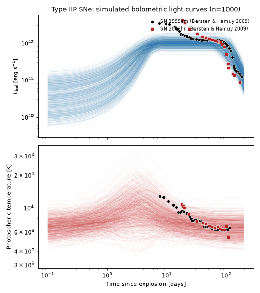
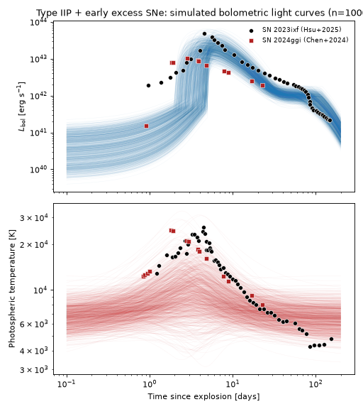
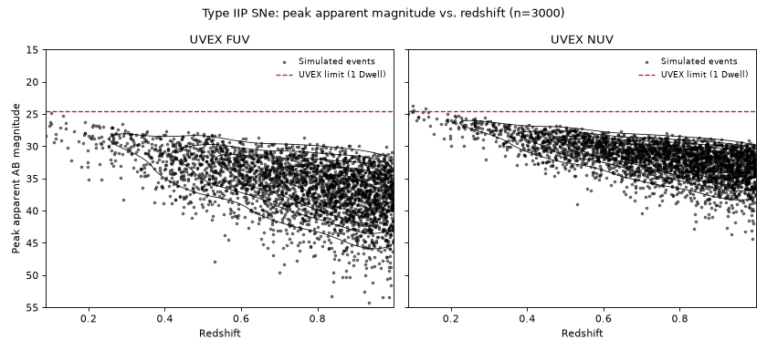
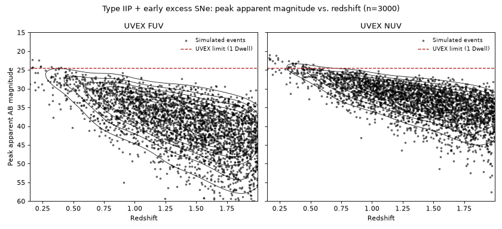

Type IIP Supernovae#
Type IIP core-collapse supernovae (CCSNe) are the explosions of hydrogen-rich massive stars whose extended envelopes produce a characteristic weeks-to-months-long luminosity “plateau” as a recombination front recedes through the ejecta. Two populations are modeled here: ordinary Type IIP SNe, and a subset that shows a distinct early-time (first few days) luminosity excess – attributed to shock breakout through and/or collisional heating of confined circumstellar material shed by the progenitor shortly before explosion – typified by SN 2023ixf [1] and SN 2024ggi [2], both of which show a fast early rise to a hot (\(\sim2.5\times10^4\) K) peak within the first few days. UVEX’s UV sensitivity makes it well suited to catching precisely this brief, hot early phase, which fades quickly out of optical bands.
Both populations are implemented by TypeIIPSNe and
TypeIIPExcessSNe, pairing
TypeIIPSED and
TypeIIPExcessSED respectively with the
rate/duration metadata described below.
Quick Facts#
Quantity |
Value |
Source |
Notes |
|---|---|---|---|
Rate |
\(R_\mathrm{CC}(z) = k h^2 \psi_\mathrm{UV}(z)\); Type IIP 40%, IIP+excess 12% of \(R_\mathrm{CC}(z)\) |
Both populations are fixed fractions of a single, shared total CCSNe rate, where \(\psi_\mathrm{UV}(z)\) is the UV-derived cosmic star-formation-rate density [4] and \(k\) is fit directly to CCSNe counts by Strolger et al.[3] (CANDELS/CLASH HST supernova surveys, out to \(z\approx2.5\)) – tying the rate to \(R_\mathrm{CC}(z)\) lets it evolve self-consistently with cosmic star formation. Ordinary Type IIP SNe make up 40% of \(R_\mathrm{CC}(z)\), the local Type IIP fraction of the core-collapse population from the volume-limited Lick Observatory Supernova Search sample [5]; of those, roughly 30% show the SN 2023ixf/SN 2024ggi-like early excess, so that subclass is assigned \(0.40\times0.30=12\%\) of \(R_\mathrm{CC}(z)\). |
|
Redshift limit |
\(z = 1\) (Type IIP), \(z = 2\) (Type IIP + excess) |
– |
The early-interacting population’s higher peak temperatures and correspondingly bluer, more UV-detectable emission justify its more generous limit. |
Duration |
200 days (both populations) |
– |
Generous enough to cover the plateau and the transition to the (unmodeled) nebular phase. |
SED Model#
Type IIP#
TypeIIPSED pairs the same rise/plateau/decline
bolometric light curve introduced by Villar et al.[6] for photometric SN
classification (VillarLightcurve) with a
smooth broken-power-law-with-floor photospheric temperature, both referenced to a shared time
\(t_0\):
Because this codebase does not yet have a sample of UV-selected Type IIP light curves on which to
fit subtype-specific priors, several of the temperature-law shape parameters
(beta, tau_rise, tau_fall, alpha_rise, alpha_decay, smoothing) are held
fixed at representative values rather than sampled, leaving only the overall amplitude, plateau
timing, and peak/floor temperatures free.
Parameter |
Symbol |
Prior |
Notes / Source |
|---|---|---|---|
|
\(A\) |
Normal(\(\log_{10}(A/\mathrm{erg\,s^{-1}})\); mean=42, \(\sigma\)=0.1) |
Luminosity normalization. |
|
\(t_0\) |
Uniform(2 d, 5 d) |
Peak/reference time, shared by the light curve and the temperature law. |
|
\(t_1\) |
Uniform(50 d, 120 d) |
Plateau end time [6]. |
|
\(\beta\) |
Fixed (0/day) |
Plateau slope. |
|
\(\tau_r\) |
Fixed (1 day) |
Logistic rise timescale. |
|
\(\tau_f\) |
Fixed (50 day) |
Post-plateau exponential decline timescale. |
|
\(T_\mathrm{peak}\) |
Normal(\(\log_{10}(T_\mathrm{peak}/\mathrm{K})\); mean=4.0, \(\sigma\)=0.15) |
Approximate peak photospheric temperature. |
|
\(T_f\) |
Normal(\(\log_{10}(T_f/\mathrm{K})\); mean=3.8, \(\sigma\)=0.08) |
Asymptotic (recombination) photospheric temperature floor. |
|
\(\alpha_r,\ \alpha_d,\ s\) |
Fixed (0.8, 1, 4) |
Temperature-law shape parameters. |
Type IIP + Early-Time Excess#
TypeIIPExcessSED adds a sigmoid-shaped early-time
excess on top of the same TypeIIPSED light curve and
(unchanged) temperature law:
sharing the same rise timescale \(\tau_r\) and reference time \(t_0\) as the Villar component. The excess amplitude prior is set from the two best-observed examples of this subclass: SN 2024ggi peaked at \(\sim1.5\times10^{43}\) erg/s [2] and SN 2023ixf at \(\sim4\times10^{43}\) erg/s [1]. As with the base model, the underlying sample is too small to fit reliable priors from, so the excess decay timescale is held fixed.
Parameter |
Symbol |
Prior |
Notes / Source |
|---|---|---|---|
|
\(A_e\) |
Normal(\(\log_{10}(A_e/\mathrm{erg\,s^{-1}})\); mean=43.5, \(\sigma\)=0.2) |
Early-excess luminosity normalization; SN 2024ggi/SN 2023ixf peaked at \(\sim1.5\text{-}4\times10^{43}\) erg/s [2][1]. |
|
\(\tau_e\) |
Normal(\(\tau_e\)/6 day; mean=1.0, \(\sigma\)=0.1) |
Excess decay timescale. |
All other parameters (amplitude, t0, t1, T_peak, T_floor, and the fixed shape
parameters) are inherited unchanged from TypeIIPSED
above.
Simulated Light Curves#
The plots below each draw 1000 random parameter realizations from the corresponding model’s priors and show the resulting bolometric light curves and photospheric temperatures – first for the ordinary Type IIP model, then for the Type IIP + early-excess variant. Each is overlaid with the observed bolometric light curves and photospheric temperatures of two well-observed examples of the relevant subclass: SN 1999em and SN 2003hn [7] for the ordinary population, and SN 2023ixf [1] and SN 2024ggi [2] for the early-excess population.
(Source code, png, hires.png, pdf)
{kind=link}
{kind=link}

(Source code, png, hires.png, pdf)
{kind=link}
{kind=link}

Observability Summary#
Below are the redshifts \(z\) and corresponding bandpass calculated peak apparent AB magnitudes
\(m_\mathrm{AB}\) of 3000 simulated events from each population drawn from the priors above,
with the UVEX 1 Dwell limit of \(m<24.5\) overplotted – first for the ordinary Type IIP
population, then for the Type IIP + early-excess population. Because neither model’s bolometric
light curve peaks exactly at a single named parameter (the excess component, in particular, peaks
some time after its own reference time t0, not at it), the peak apparent magnitude is found
by a numerical search over each event’s light curve rather than evaluated at a fixed time. Findings
here justify our confidence in the \(z=1\) and \(z=2\) redshift limits adopted for the two
populations, respectively.
(Source code, png, hires.png, pdf)
{kind=link}
{kind=link}

(Source code, png, hires.png, pdf)
{kind=link}
{kind=link}

The anticipated rate of each population detectable by UVEX at these limits is as follows assuming that any event above the \(m<24.5\) limit is detectable, and that each population is isotropic and homogeneous in comoving volume out to its own redshift limit: